How to make an interlocking slice sculpture
Two families of flat slices cross at right angles and slot into each other, like an egg crate. People also call it a waffle or a slice form. Cardboard works well for big pieces, and plywood or acrylic for strong ones. This guide uses Lamina, a free laser slicer that runs in your browser.
Which shapes work
One family of slices goes in from above and the other from below. So each slice must have a straight way in. A torus works, because every vertical line meets its tube once. A head with ears above the skull on the same lines does not, and Lamina's insertion check says so. For such a shape, use stacked slices or radial slices instead.
Steps
The pictures show the torus from the video above. Each picture shows the app at that step. An orange ring with a label marks the control to use.
- Open Lamina on Interlocked Slices. It opens on the Model
tab, with the bracket example cut in two families of slices.

- In upload, choose your model file.

- In model size (mm), type the width of the finished piece in the x box. The y and
z boxes follow.
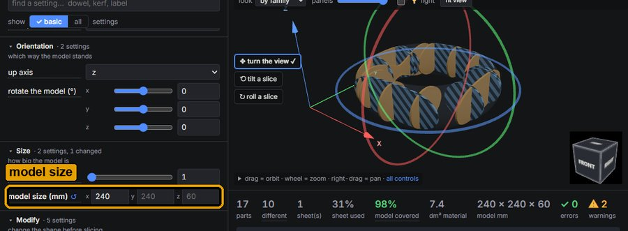
- On the Technique tab, set assembly axis. The 1st family of slices goes in from above along this
axis, and the 2nd family from below.
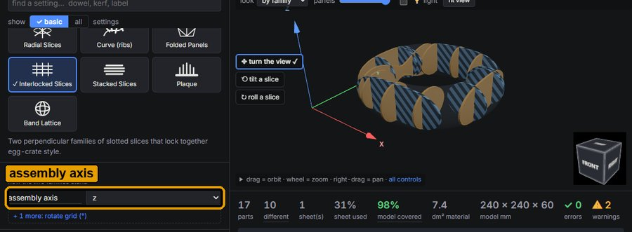
- In distribution, keep count to set the number of slices in each family. Pick
distance to set the space between the slices instead.
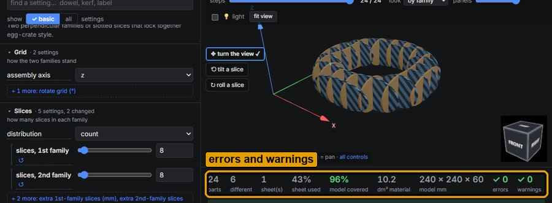
- Type the number of slices in slices, 1st family and slices, 2nd family. More slices show more
of the surface, and give more slots to cut.

- On the Sheet & fit tab, under What you make with, click Laser. For a CNC router,
click Router: its inside-corner relief lets the round bit cut every slot corner deep enough.
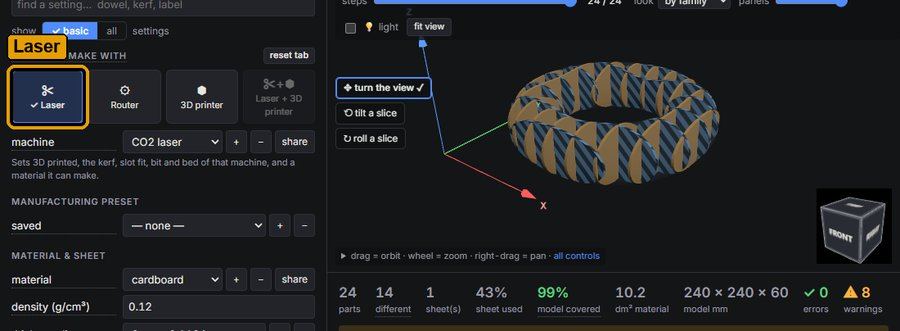
- In machine, pick your machine. It sets the kerf and the bed size of that machine.
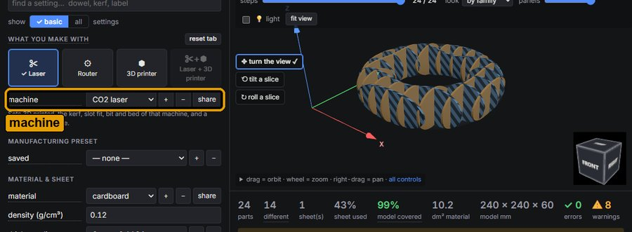
- In material, pick your material.
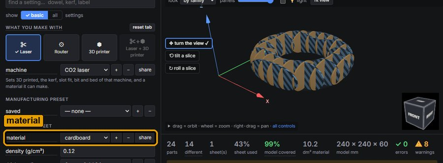
- In thickness (mm), type the thickness you measured with calipers. The slots are cut to this
thickness.
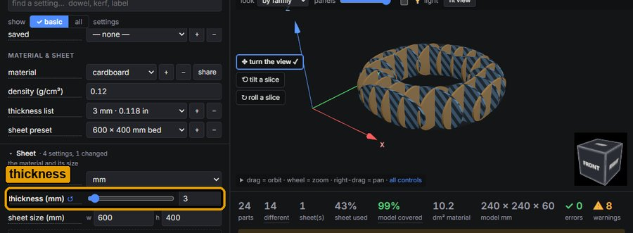
- Read the errors and warnings under the 3D view. Correct every error before you cut. Where a
region would float, auto-fix adds a crossing slice.
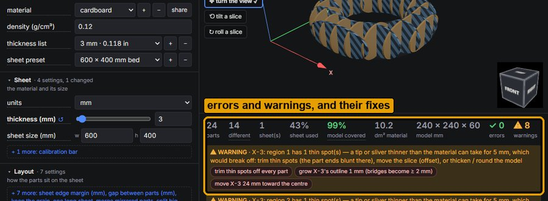
- On the Export tab, click fit test to cut. Cut it from the same sheet as the parts.
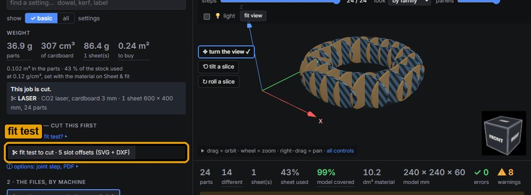
- Push each of the five joints of the fit test together. On the Sheet & fit tab, type the number of
the loosest joint that still holds into slot offset (fit).
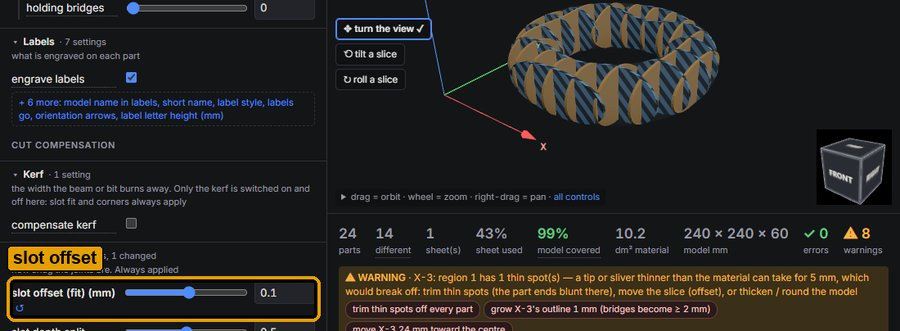
- On the Export tab, click LASER · sheets SVG + DXF (.zip) and cut the sheets.
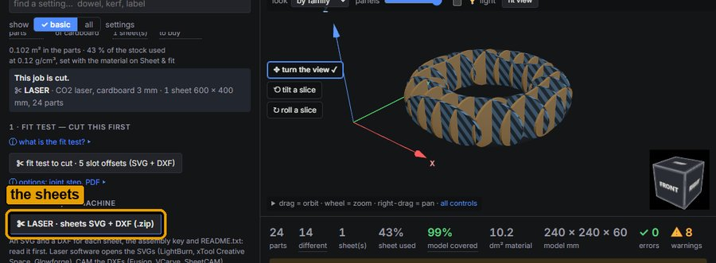
- Slide the 1st family in from above, then the 2nd family from below. To see the order, drag steps
over the 3D view.
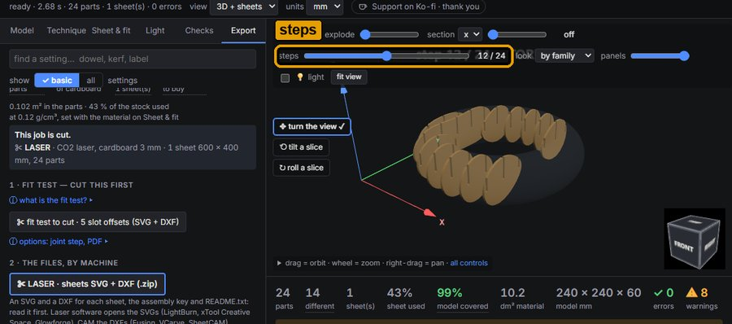
Why the slots fit
Lamina calculates the depth of each slot at each crossing from the mesh itself. So a hollow or an uneven shape notches correctly, where older tools left the slices loose. You can also set the notch ratio and the flare at the mouth of the slot, rotate the grid, and add extra slices at the places you choose.
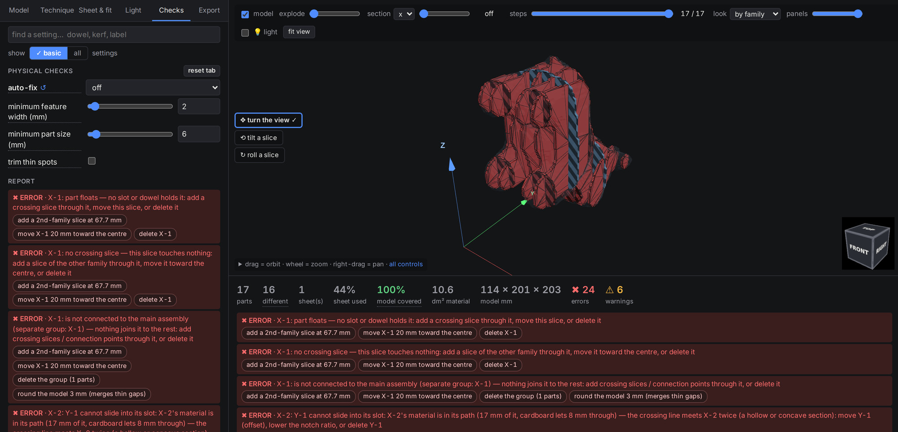
Made with interlocked slices

Giant dragon head
by jarkien
More in the gallery. For rings in three directions on a sphere, an egg or a box, see the band lattice.